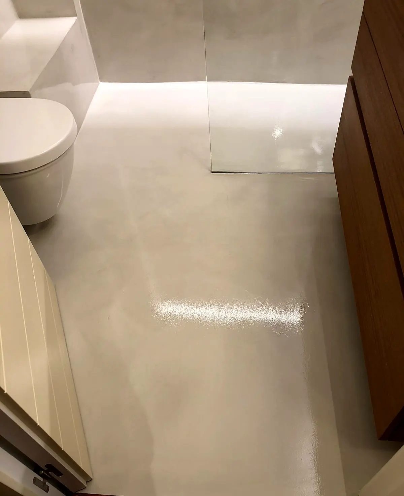
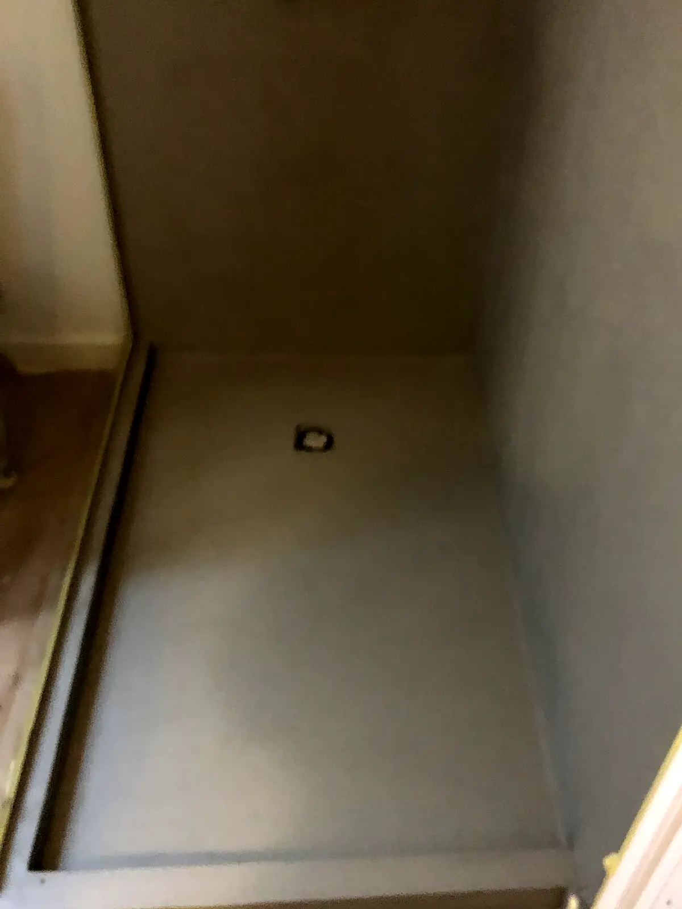
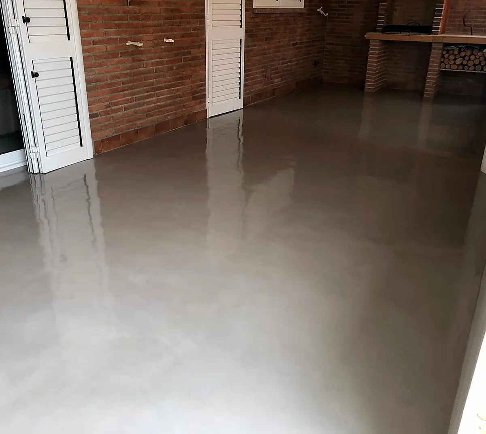
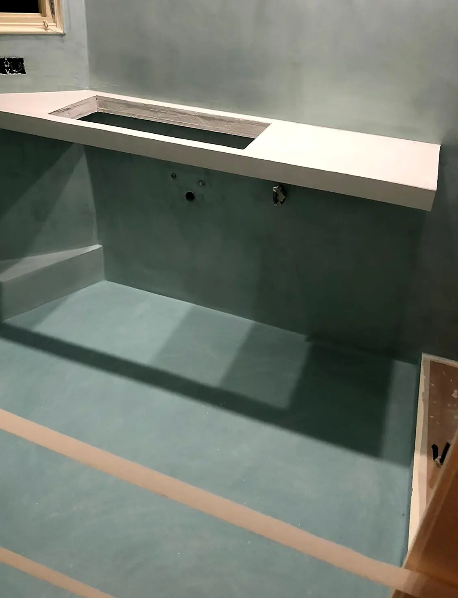

Baño de microcemento con ducha de obra
Suelo, paredes y plato de ducha en un mismo revestimiento continuo, con desagüe lineal y murete de obra.
Leer el casoRevestimos suelos, paredes, platos de ducha, encimeras y escaleras con microcemento: una superficie continua, sin juntas, que se aplica a mano capa a capa. Es la forma de renovar un baño o un salón sin levantar el suelo existente cuando el soporte lo permite.






Suelo, paredes y plato de ducha en un mismo revestimiento continuo, con desagüe lineal y murete de obra.
Leer el casoEn muchos casos sí, siempre que la baldosa esté firme y bien pegada. Lo comprobamos en la visita.
Limpieza con productos neutros y sin abrasivos. Te explicamos cómo cuidarlo al entregar la obra.